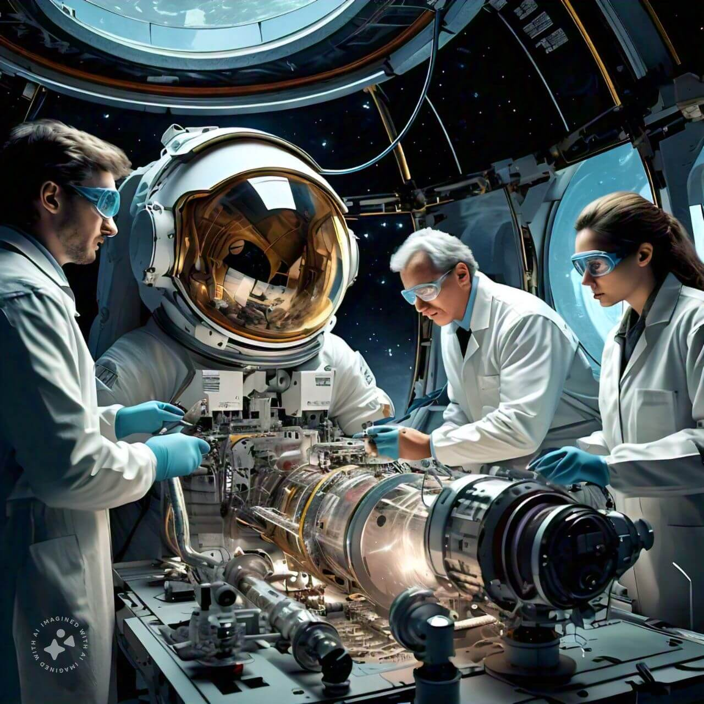
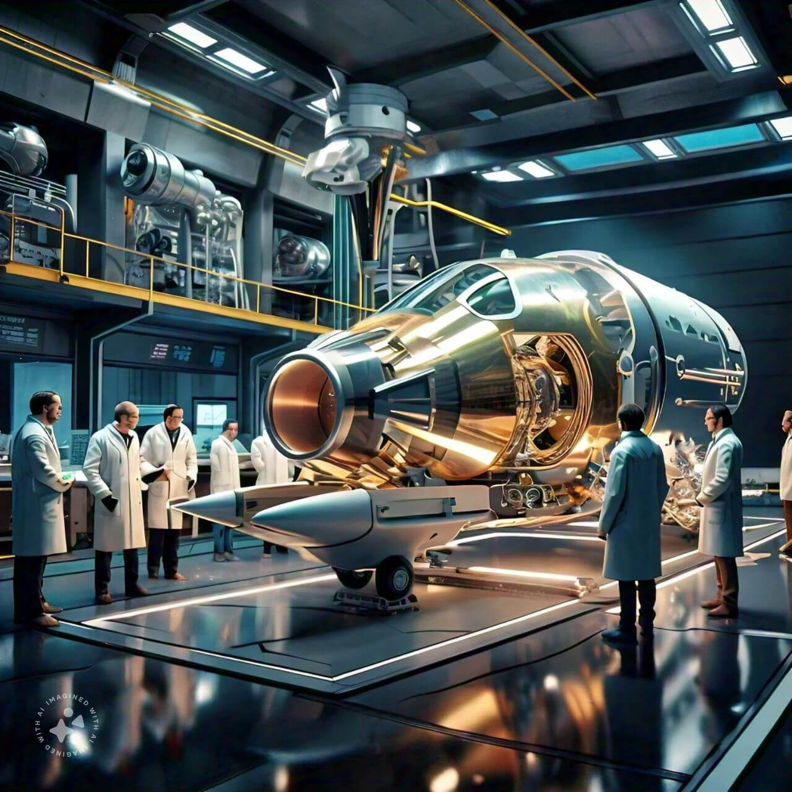
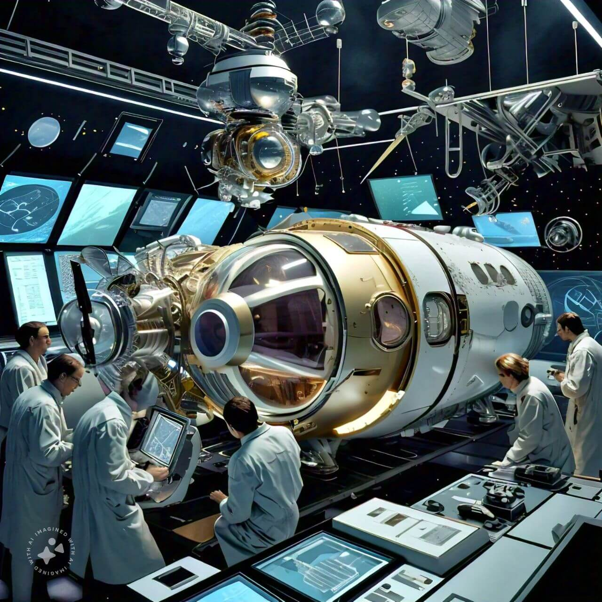
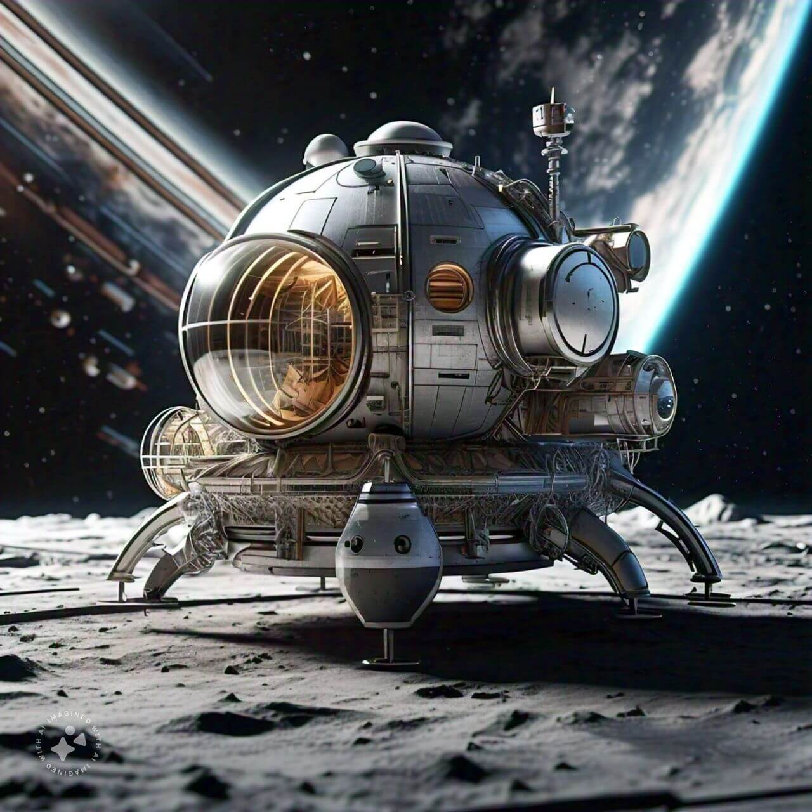
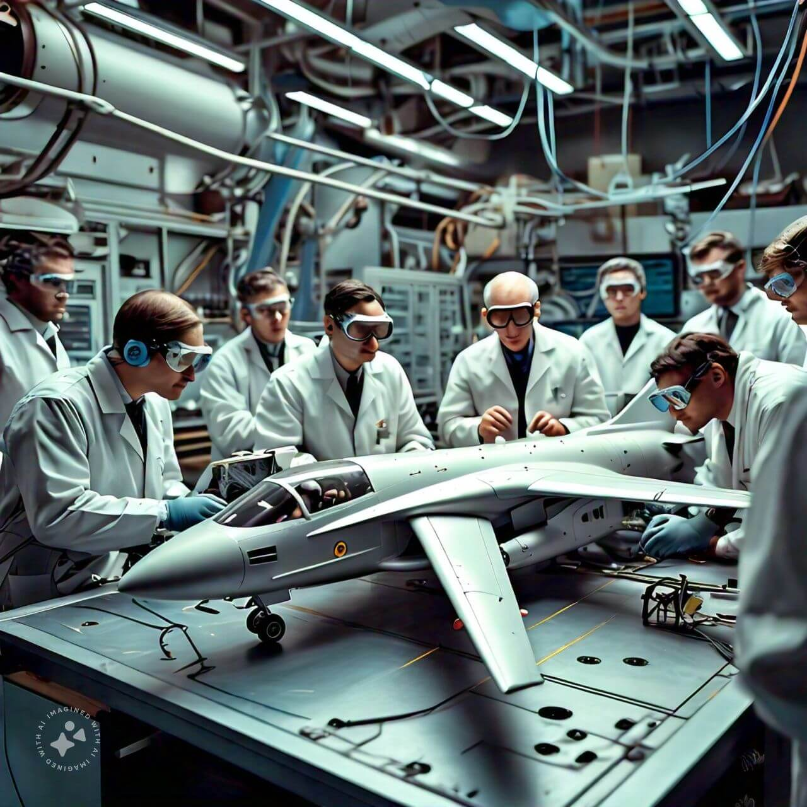
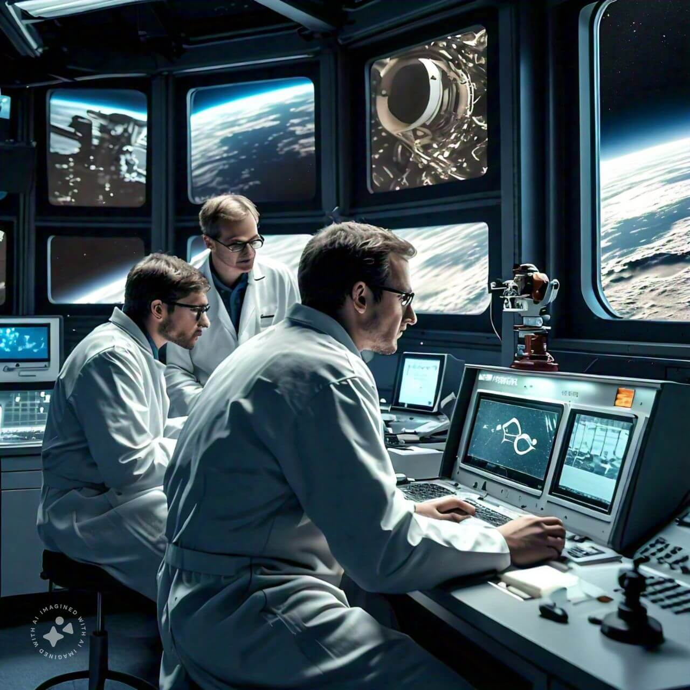
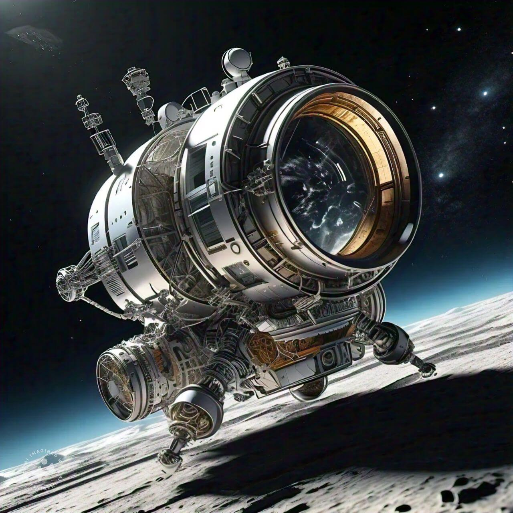
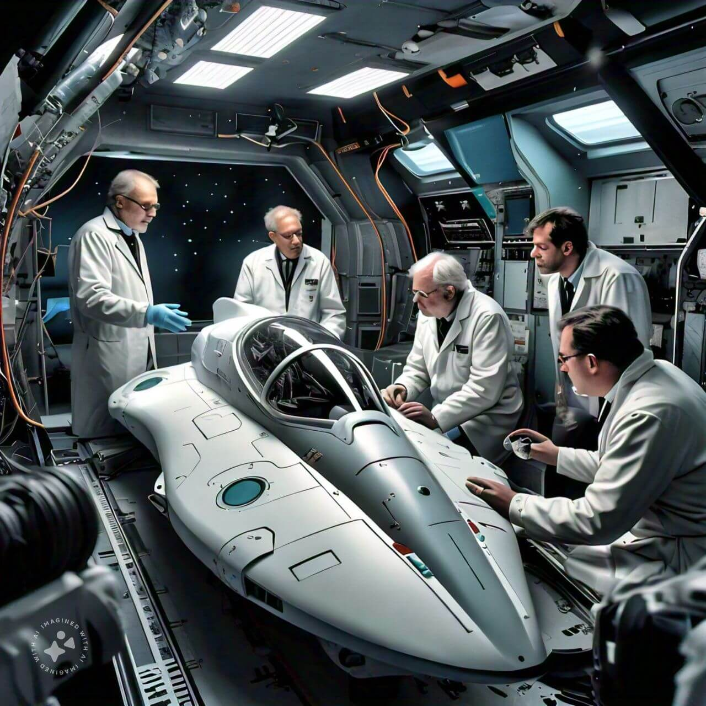
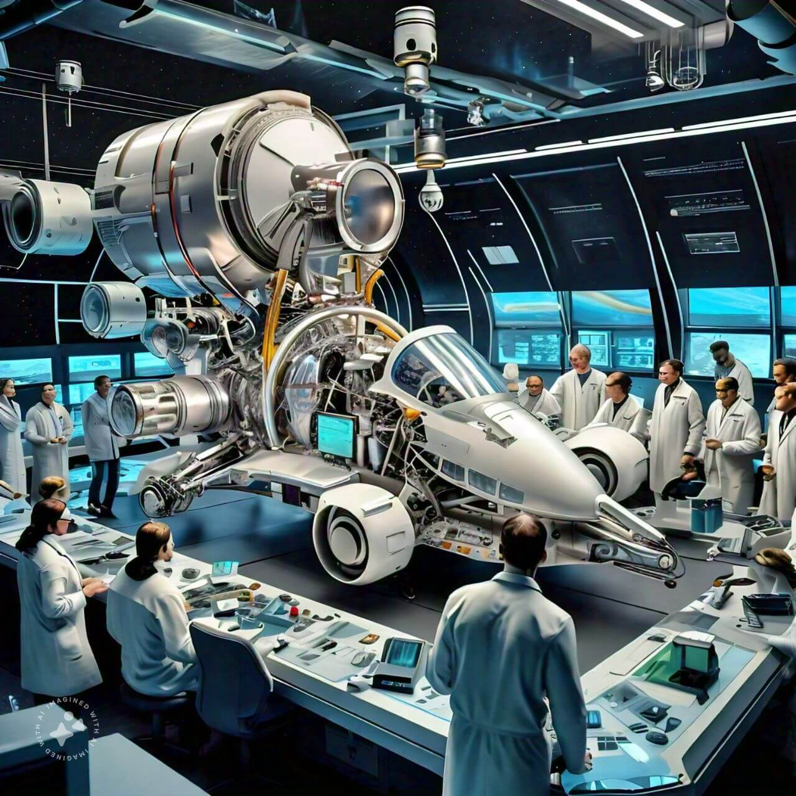
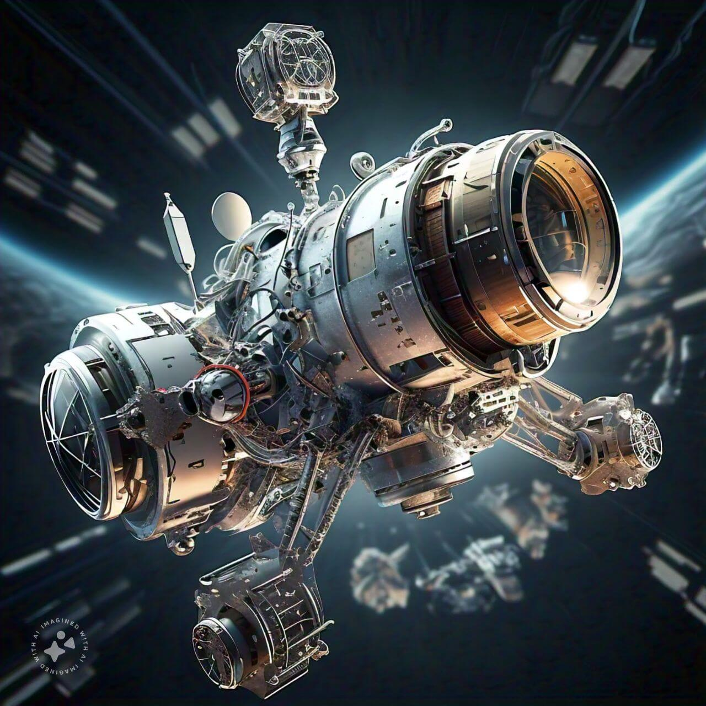

OUR PURPOSE
The Aurora Quest
OUR MISSION
Our mission is to push the boundaries of exploration and innovation through the Aurora Quest, a visionary and ambitious initiative designed to uncover the mysteries of distant planets and celestial bodies. We are dedicated to advancing scientific knowledge and fostering a spirit of curiosity and discovery that knows no bounds. Our aim is to lead the way in exploring the unknown, driven by a deep commitment to understanding the vast cosmos that surrounds us.
At the core of the Aurora Quest is a steadfast commitment to collaboration and interdisciplinary partnership. We believe that the most profound discoveries are achieved when experts from diverse fields—such as astronomy, astrophysics, planetary science, engineering, and robotics—work together in a synergistic environment. This initiative serves as a bridge, bringing together a global network of scientists, researchers, and innovators to share knowledge, exchange ideas, and collectively solve some of the most challenging puzzles presented by the universe.
By leveraging cutting-edge technology and adopting a forward-thinking approach, we strive to develop and deploy advanced tools and methodologies that can enhance our exploration capabilities. This includes the use of next-generation spacecraft, autonomous probes, artificial intelligence, and state-of-the-art observational equipment, all designed to gather data from the most remote corners of our solar system and beyond. Our eƯorts are not just about reaching new frontiers but also about transforming the way we understand and interact with the cosmos.
Moreover, the Aurora Quest is driven by a profound desire to inspire and educate. We recognize the importance of cultivating a passion for science and exploration in future generations. Through public outreach programs, educational initiatives, and immersive experiences, we aim to ignite the imaginations of young minds and encourage them to pursue careers in science, technology, engineering, and mathematics (STEM). Our mission is not only to explore distant worlds but also to inspire new ones, nurturing the explorers, scientists, and thinkers of tomorrow.
We are committed to sustainability and ethical exploration, ensuring that our quest to understand the universe does not come at the cost of the environments we explore or the balance of ecosystems on Earth. We uphold the highest standards of environmental stewardship and ethical practices, carefully considering the impact of our missions on both terrestrial and extraterrestrial environments.
Ultimately, the Aurora Quest is about more than just exploration; it is about contributing significantly to our collective understanding of the universe and our place within it. Through relentless innovation, unwavering curiosity, and a commitment to knowledge, we seek to unlock the secrets of distant planets, to venture where none have gone before, and to expand the horizons of human understanding. We invite all who share our passion and wonder for the universe to join us on this extraordinary journey, as we strive to discover new worlds and reveal the hidden marvels of our cosmos.




OUR GOALS
Our primary goals are to achieve notable milestones in space exploration and technological advancement. We strive to develop and deploy advanced spacecraft that can endure extreme conditions, operate eƯiciently in the harshest environments, and provide us with unprecedented data on planetary environments and celestial phenomena. This involves pioneering engineering solutions, such as heat-resistant materials, advanced propulsion systems, and autonomous navigation technologies, to ensure our spacecraft can withstand the rigors of space travel and perform complex scientific tasks.
In addition to technological development, we are dedicated to building and strengthening international partnerships that enhance collaborative research and share resources and expertise across borders. By working together with space agencies, research institutions, and private enterprises around the globe, we aim to pool our collective knowledge and capabilities to address the most challenging questions in space science and exploration.
Our eƯorts are directed toward making groundbreaking discoveries that push the boundaries of our understanding of the universe. This includes uncovering new insights into planetary formation, analyzing the potential for life on other worlds, and exploring the fundamental properties of space and time. Each discovery has the potential to revolutionize our comprehension of the cosmos and inspire new scientific inquiries.
Furthermore, we are committed to improving space travel capabilities by developing technologies that enhance safety, eƯiciency, and sustainability. This includes advancing life support systems, optimizing fuel usage, and ensuring that our missions can be conducted with minimal environmental impact. By addressing these technical challenges, we aim to pave the way for longer-duration missions and human exploration of more distant destinations.
Education and public engagement are also central to our mission. We believe that inspiring and informing the public about the wonders of space exploration is crucial for fostering a deeper appreciation of science and technology. Through educational programs, outreach activities, interactive exhibits, and multimedia content, we strive to captivate audiences of all ages and encourage the next generation of scientists, engineers, and explorers.
Ultimately, our goal is to create a legacy of innovation and discovery that advances human knowledge and exploration. By pursuing ambitious objectives and maintaining a spirit of curiosity and collaboration, we hope to make a lasting impact on the field of space exploration and contribute to a greater understanding of our place in the universe.





